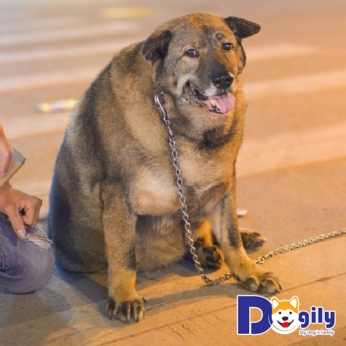
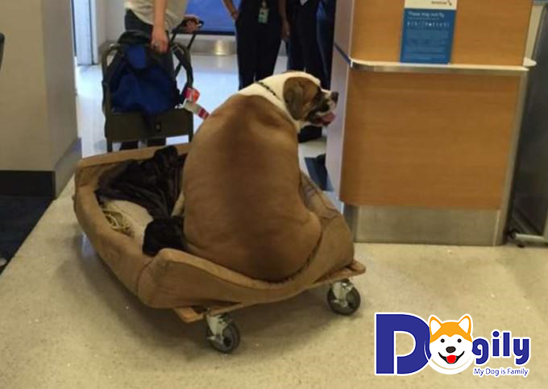
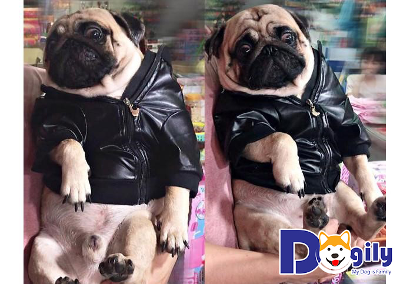
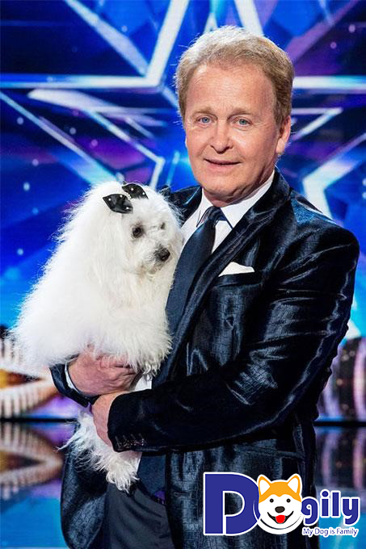
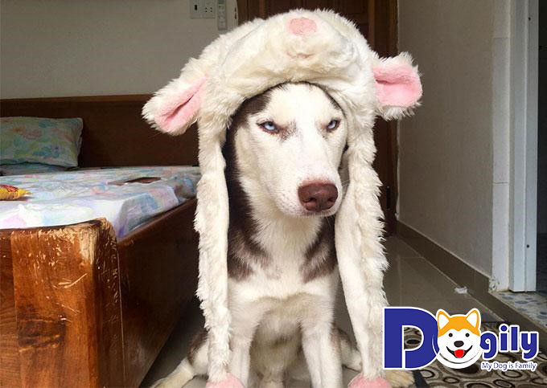
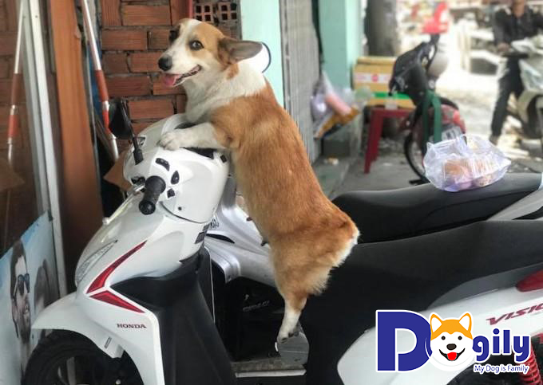
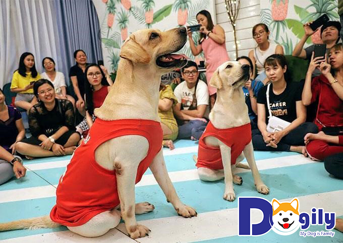

Hình ảnh của những chú chó nổi tiếng trên mạng xã hội Việt Nam và thế giới luôn thu hút sự quan tâm của người yêu chó. Những chú cún này sở hữu một lượng fan vô cùng đông đảo không hề thua kém các ngôi sao nổi tiếng. Ngay tại Việt Nam thôi cũng có những “đại boss” đang sở hữu tài khoản Facebook với cả chục ngàn lượt following. Những chú chó nổi tiếng như Riềng Sẹo, Candy The Corgi,.. Có lẽ không còn xa lạ với những người yêu chó. Bài viết hôm nay của Dogily.vn sẽ tổng hợp một số hình ảnh của những chú chó có sức ảnh hưởng nhất trên MXH hiện nay. Và ẩn sau những hình ảnh này của là những câu chuyện vô cùng cảm động.
Những chú cún mũm mĩm luôn cực kỳ dễ thương. Nhưng bạn đã từng nhìn thấy một chú chó nặng đến 50, 70kg chưa? Nếu chưa, bạn hãy theo dõi hình ảnh của 2 “đại boss” với cân nặng khủng sau đây.
Mới đây hình ảnh của một chú chó với thân hình ục ịch được chủ dắt đi chạy bộ giảm cân đã thu hút sự quan tâm của cộng động mạng. Được biết đây là chú chó cỏ nhưng có cân nặng đến hơn 50kg. Vì được chủ cưng chiều từ nhỏ cộng với chế ăn đến 15 quả trứng vịt lộn/ngày đã khiến chú phát phì như vậy.
Chủ của chú chó này cho biết trước đây cún không mập như vậy đâu. Nhưng có lẽ do chế ăn thừa chất và ít vận động nên đã khiến cún càng ngày càng mập. Để giảm cân, chủ của chú chó này mỗi ngày đã cho cún ăn từ 15 quả trứng vịt lộn xuống còn 5 quả/ngày. Cùng với đó là chế luyện tập với 2 tiếng đi bộ mỗi ngày, tương đương với 20km. Được biết, sau một quá trình luyện tập tích cực của cả boss và sen thì cún cũng được giảm đi 10kg. Tuy nhiên, vẻ ục ịch bề ngoài vẫn không khác là mấy. Dù mập nhưng cún vẫn rất đáng yêu đấy chứ. Đây cũng là bài học cho các sen khi nuôi boss, dù có thương đến mấy nhưng quá nuông chiều boss. Nhất là chế độ ăn phải điều độ để không làm boss tăng cân quá mức
Chú chó nặng nhất Hà Nội sẽ chưa là gì nếu so với chú chó tên Hank nặng đến 74kg. Với mức cân nặng như vậy, Hank thuộc vào top những chú chó nặng nhất thế giới.
Chủ của Hank vốn là một nhà thiết kế nội thất khá có điều kiện. Hank từng có lần được ngồi ghế hạng sang trên chuyến bay từ Los Angeles tới Denver. Từ đây Hank lại càng trở nên nổi tiếng hơn.
Hình ảnh cún Hank ngồi trên ghế hạng sang đã được nhiều hành khách ghi lại và chia sẻ trên mạng xã hội. Và cũng dễ hiểu khi những tấm hình này có tốc độ chia sẻ cực khủng. Khá nhiều người thắc mắc, liệu Hank có quậy phá trên chuyến bay không. Không giống như nhiều người lo lắng, Hank ngồi rất ngoan từ đầu đến cuối hành trình.
Hình ảnh chó cười tên Herbert chắc hẳn sẽ khiến bạn trở nên yêu đời hơn. Herbert vốn là giống chó Pitbull, cún đã phải trải qua khoảng thời gian vô cùng khó khăn trước khi được đưa vào trung tâm cứu hộ động vật.
Lúc mới được nhân viên cứu trợ động vật phát hiện, Herbert có sức khỏe rất yếu, suy dinh dưỡng trầm trọng. Nhưng chỉ sau vài tuần nhờ vào sự chăm sóc của nhân viên tại trung tâm, Herbert đã có sự phục hồi đáng kinh ngạc. Hình ảnh con chó cười Herbert đã dần trở nên nổi tiếng, các bức hình chó cười của cún đã được chia sẻ khắp các mạng xã hội.
Herbert đã trở thành biểu tượng con chó cười hạnh phúc nhất thế giới. Tất cả là nhờ vào tình yêu động vật của đội ngũ nhân viên cứu trợ. Chó Herbert cũng là minh chứng cho thấy, chỉ cần có đủ tình yêu thương thì mọi vết thương đều có thể lành lại.
Có thể nói trong các giống chó thì chó Pug là giống chó có gương mặt cực kỳ giải trí. Pug là giống chó kiểng có nguồn gốc từ Trung Quốc với thân hình vừa phải, không quá to cũng không quá nhỏ. Pug thường chỉ có cân nặng từ 10kg trở xuống.
Nhờ gương mặt với biểu cảm khó đỡ, những hình ảnh của chó Pug luôn khiến người xem phì cười. Nếu là người thường theo dõi các group chó mèo, chắc hẳn bạn đã từng biết đến chú chó tên Po. Cún nổi tiếng nhờ những video ăn vạ, cậy chủ. Lúc bình thường khi không chủ, Po khá dễ bắt nạt. Tuy nhiên, chỉ cần thấy có bóng chủ thôi là chú ta bỗng hung hăng đến bất ngờ. Chủ của Po là chị Nguyễn B.P thường xuyên đăng tải những hình ảnh đáng yêu Po lên trang cá nhân. Vì thế mà Po cũng đang dần trở thành một trong những chú chó nổi tiếng trên mạng xã hội.
Người ta ấn tượng với Po không chỉ vì tính cách hay nũng nịu, thích ăn vạ mà còn ở những biểu cảm vô cùng dễ thương. Trừ những lúc bị trêu ghẹo thì Po cũng khá hiền lành, biết nghe lời. Chỉ cần chị chủ gọi “con trai ơi” là Po sẽ lập tức 3 chân 4 cẳng đến bên mẹ P của Po ngay.
Chu cho biet noi tieng nguoi tên Wendy là cái tên không còn xa lạ với người yêu chó. Wendy và chủ của mình là ông Marc Metral, 61 tuổi đến từ Pháp đã từng tham gia chương trình Tìm Kiếm Tài Năng Nước Anh. Phần thi đối thoại giữa ông Marc Metral với chú chó Wendy đã gây sốt cộng mạng thế giới. Người ta không thể hiểu tại sao một chó lại có thể nói được tiếng người rõ ràng đến vậy. Thậm chí ngữ điệu và biểu cảm còn ăn khớp đến kỳ lạ.
Nhiều tranh cãi đã nổ ra khi cho rằng tiết mục của Wendy và ông Marc Metral đã có sự trợ giúp của công nghệ. Tuy nhiên, những biểu cảm mà Wendy đã thể hiện trong phần thi thì không phải nhung chu cho biet noi nào cũng làm được.
Nếu là người yêu thiên văn học, thích khám phá những bí ẩn của vũ trụ có lẽ bạn đã từng nghe qua chó Laika. Đây là chú chó đã được người Nga huấn luyện để thực hiện nhiệm vụ là sinh vật đầu tiên khác loài người bay vào vũ trụ.
Laika đã được đưa lên vũ trụ trên con tàu mang tên Sputnik vào ngày 3/11/1957. Tuy nhiên, vì không thể thích nghi với môi trường ngoài vũ nên đã tử vong ngay sau đó. Điểm đáng nói là Laika đã phải chịu đau đớn dưới nhiệt độ và còn bị ngạt thở trước khi chết. Đây là thực sự là một sự tàn nhẫn với một chú chó nhỏ như Laika. Cho đến nay những người yêu động vật trên thế giới vẫn không ngừng chỉ thích hành động đưa Laika lên vũ trụ của cơ quan vũ trụ Nga. Cho dù biết chắc Laika sẽ chết trên chuyến hành trình bay vào vũ trụ.
Để liệt kê đầy đủ những chú chó nổi tiếng trên mạng xã hội thì khá là nhiều. Một số cái tên hot trong làng cún cưng hiện nay phải kể đến nhe Riềng Sẹo, Candy, Củ Cải,.. Những chú cún này đều đang sở hữu một lượng following khủng trên Facebook.
Husky đang là một trong những giống chó cảnh mà nhiều người yêu thích nhất hiện nay. Với bản tính tăng động, thích quậy phá cùng với loạt biểu cảm hài hước Husky đã và đang khiến các con sen mê như điếu đổ. Nếu bạn là người thường xuyên theo dõi các group liên quan đến chó Husky, chắc chắn đã từng biết đến cái tên Riềng Sẹo.
Riềng Sẹo là chú chó Husky sinh vào ngày 21/5/2016. Cún được cô chủ Đoàn T.A.T nhận nuôi khi mới 2 tháng tuổi. Sở dĩ chú cún này có tên Riềng Sẹo là bởi vết sẹo trên mũi do bị mèo cào. Và ngay sau khi về nhà mới chú đã lao ngay vào ngậm củ riềng dùng để làm thịt gà.
Biệt tài của Riềng Sẹo chính là có thể ăn mọi thứ. Ngoài các món cơm canh thông thường, chú Husky ngáo này không hề ngán các món ăn độc lạ khác. Từ các loại hoa quả như sầu riêng cho đến hành, tỏi, riềng, xả ớt. Hay thậm chí là cả dầu gió, mắm nêm chú cũng ăn ngon lành mà không hệ có vấn đề gì.
Ngoài tài ăn mọi thứ, Riềng Sẹo cũng giống như các con chó ngáo khác đều rất thích cắn đồ. Đôi lúc bản tính tăng động của chú cũng làm cô chủ dở khóc dở cười. Nhưng bù lại, Riềng Sẹo lại rất thân hay làm nhiều trò vui.
Hiện nay, Facebook chính thức của Riềng Sẹo đã có đến hơn 70.000 lượt theo dõi. Đây là con số khá ấn tượng với một chú chó mà người thường cũng khó mà đạt được.
Candy là một trong những chú chó nổi tiếng trên mạng xã hội hiện nay với biệt tài ngủ mọi lúc mọi nơi. Candy thuộc vào giống chó Corgi với thân hình mũm mĩm, cái mông to tròn và 4 chân ngắn. Candy trở nên nổi tiếng trong cộng đồng mạng với các video ghi lại cảnh chú ngủ bất chấp. Cho dù đặt Candy ở giữa công viên ồn ào, chú cún này cũng sẽ dễ dàng đi vào giấc ngủ.
Được biết chủ của Candy hiện đang là admin của một group chó mèo khá nổi tiếng. Fanpage riêng của Candy là Candy The Corgi đã có đến hơn 120.000 lượt following. Tại đây bạn có thể dễ dàng tìm thấy những hình ảnh thường nhật vô cùng đáng yêu của Candy.
Củ Cải là tên của chú chó thuộc giống chó Labrador. Blog cá nhân Thằng Củ Cải của chú chó này hiện đang có 55.000 lượt Following. Labrador vốn được xếp vào một trong những giống chó thông minh nhất thế giới. Cùng với đó là bản tính thân thiện, biết nghe lời, rất thích chơi với trẻ nhỏ.
ủ Cải nổi tiếng khắp mạng xã hội với khả năng tính nhẩm các con số trong phạm vi 10 ấn tượng. Những video tính nhẩm mà chủ của Củ Cải đăng tải lên Facebook đã thu hút rất nhiều lượt xem. Mọi người đều tỏ ra thán phục trước khả năng tính toán của chú chó này. Bên cạnh đó những hình ảnh đáng yêu của Củ Cải cùng với người bạn Kim Chi cũng khiến nhiều người thích thú.
Dogily.vn vừa giới thiệu đến bạn những chú chó nổi tiếng trên mạng xã hội trong và ngoài nước. Vậy làm cho cuộc sống của bạn có thêm nhiều niềm vui với sự xuất hiện của những người bạn 4 chân này nhé.